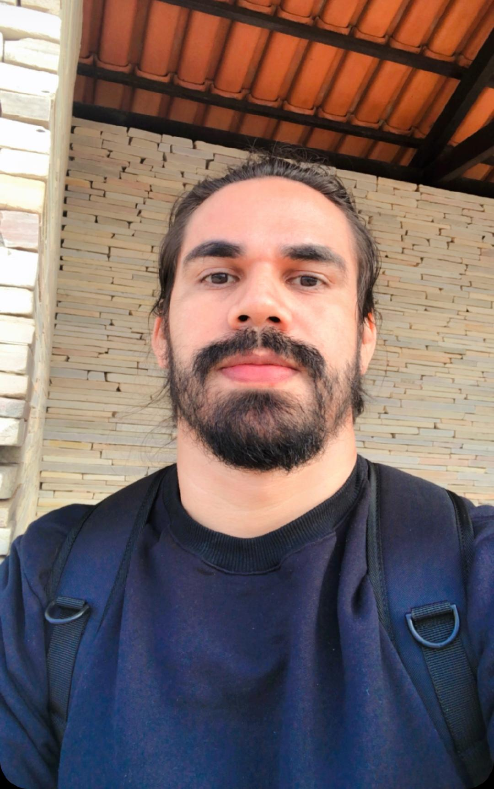

Ciências Florestais e Amazônia
Coordena e colabora em estudos sobre estrutura, dinâmica, biomassa, volume, biodiversidade, árvores gigantes e respostas das florestas tropicais às mudanças ambientais.
Currículo profissional
Professor Adjunto da Universidade do Estado do Amapá, Bolsista de Produtividade em Pesquisa do CNPq - Nível 2 e atual Pró-Reitor de Pesquisa e Pós-Graduação da UEAP. Atua em Ciências Florestais, biometria, mensuração, ecologia espacial, árvores gigantes da Amazônia, modelagem ecológica e programação científica em R.

Atuação
Coordena e colabora em estudos sobre estrutura, dinâmica, biomassa, volume, biodiversidade, árvores gigantes e respostas das florestas tropicais às mudanças ambientais.
Atua em programas de pós-graduação da UEAP, UESB e UNIFAP, contribuindo com disciplinas, orientação, redes colaborativas e formação científica em ecologia quantitativa.
Na Pró-Reitoria de Pesquisa e Pós-Graduação, contribui para políticas de pesquisa, inovação, internacionalização, qualificação da pós-graduação e fortalecimento da ciência na Amazônia.